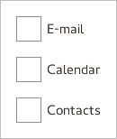
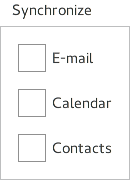
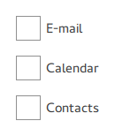

Container Controls
Qt Quick Controls offers a selection of container-like controls.
Styled top-level window with support for a header and footer | |
Abstract base type providing functionality common to containers | |
Visual frame for a logical group of controls | |
Visual frame and title for a logical group of controls | |
Provides a horizontal header view to accompany a TableView | |
Styled page control with support for a header and footer | |
Provides a background matching with the application style and theme | |
Scrollable view | |
Lays out items with a draggable splitter between each item | |
Provides a stack-based navigation model | |
Enables the user to navigate pages by swiping sideways | |
Allows the user to switch between different views or subtasks | |
Container for context-sensitive controls | |
Offers a vertical header view to accompany a TableView |
Each type of container can be used to group a set of controls together. The following sections offer guidelines for choosing the appropriate type of container, depending on the use case.
ApplicationWindow Control

ApplicationWindow creates the root window of an application, and makes it easy to add an optional header and footer to that window.
Frame Control

Frame is used to layout a logical group of controls together, within a visual frame.
GroupBox Control

GroupBox is used to layout a logical group of controls together, within a titled visual frame.
Page Control

Page provides page-specific header and footer items. It is perfectly possible to use ApplicationWindow for setting the header and the footer, but if you have a header and footer which varies per screen, then it is better to use Page.
Pane Control

Pane provides a background color that matches with the application style and theme. Pane does not provide a layout of its own, but requires you to position its contents, for instance by using a RowLayout or a ColumnLayout.
ScrollView Control
ScrollView provides scrolling for user-defined content.
StackView Control
StackView organizes content pages into a stack using a last-in-first-out principle: the last item to be "pushed" onto the stack is the first one to be removed, and the top-most item is always the one that is visible.
SwipeView Control
SwipeView organizes content pages into a swipable strip.
TabBar Control
TabBar organizes content pages into tabs.
ToolBar Control

ToolBar is a container of application-wide and context-sensitive actions and controls.